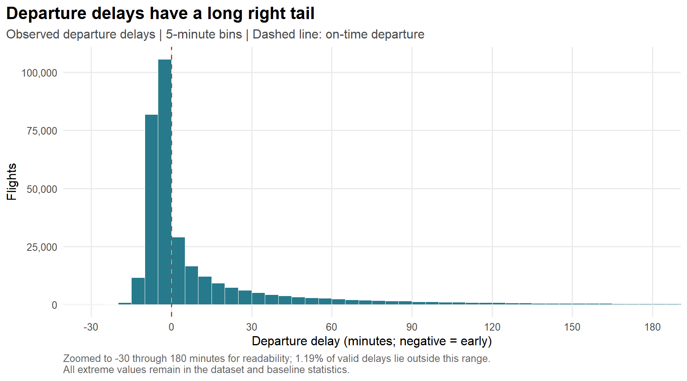
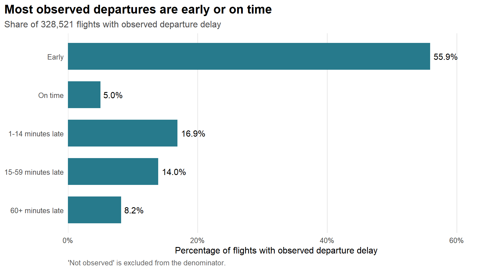
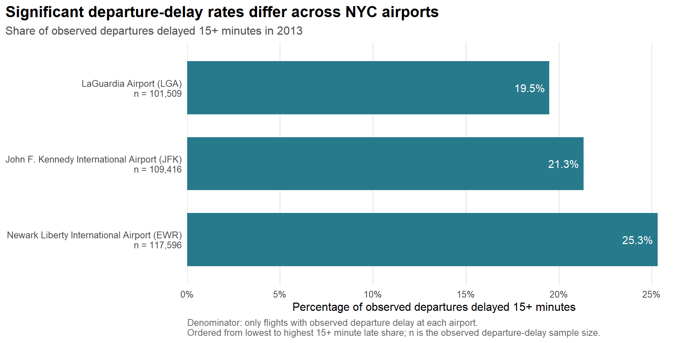
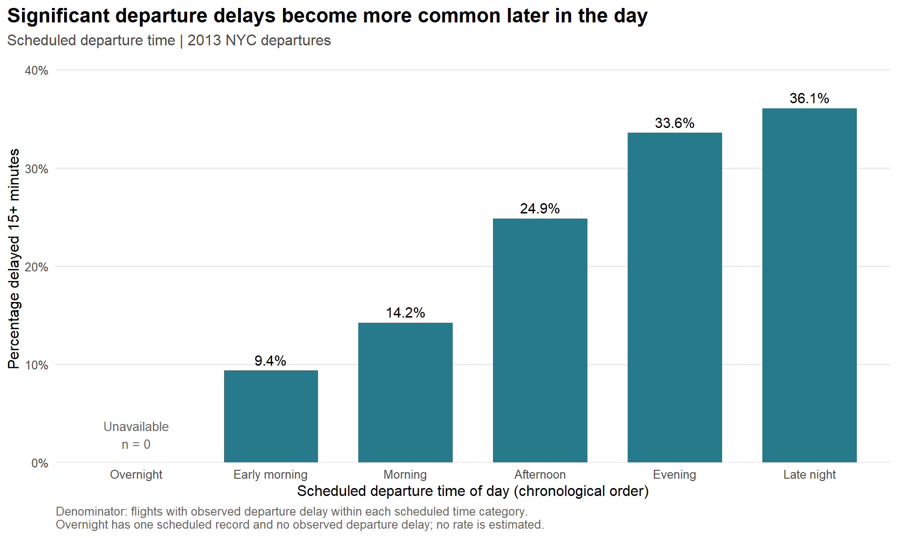
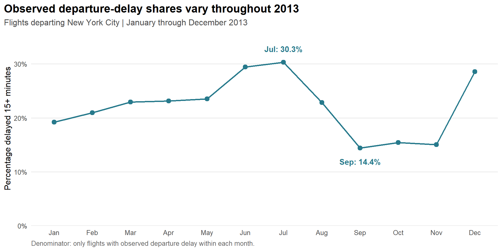
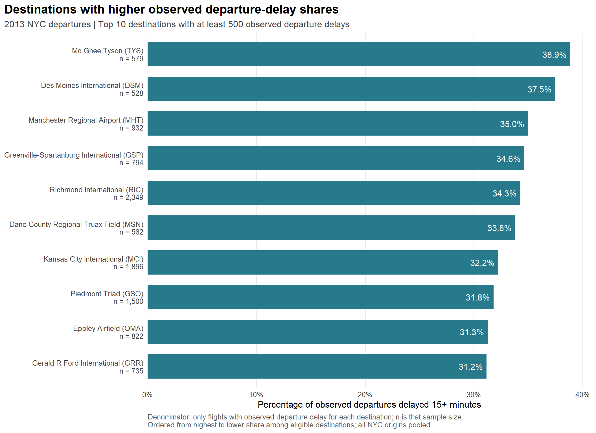
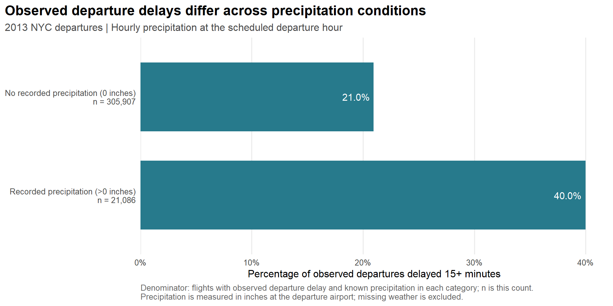

Code
library(tidyverse)
library(nycflights13)
library(lubridate)
library(scales)DATA SCIENCE · AVIATION ANALYTICS · OPERATIONAL PERFORMANCE
NYC Flights Data Analysis
Exploring flight delays across airlines, airports, routes, time, season, and weather conditions for flights departing New York City.
This project explores flight performance for departures from New York City using the nycflights13 dataset. I focus on how delays vary across airlines, airports, routes, time periods, seasons, and weather conditions, while keeping missing outcomes visible throughout the analysis.
What factors are associated with departure and arrival delays for flights departing New York City in 2013, and how does performance vary across airlines, departure airports, routes, time, season, and weather conditions?
ANALYTICAL APPROACHI begin by checking the quality and completeness of the data, then establish the overall delay pattern before moving into comparisons by airline, airport, route, time, season, and weather. The analysis is descriptive: it shows where patterns differ, but it does not treat those differences as proof that any one factor causes delays.
The nycflights13 package provides the following tables for this project:
flights: flight records from JFK, LGA, and EWR in 2013, including scheduled and actual times, delays in minutes, carrier, destination, and distance in miles. This is the main analysis table.airlines: carrier codes and airline names, for interpreting airline comparisons in a later stage.airports: airport codes, names, locations, and time zones, for interpreting origins and destinations in a later stage.weather: hourly weather observations for the NYC departure airports; these will be joined to flight records in a later stage.Only flights is used in this preparation stage. No lookup tables or weather data are joined yet. Package documentation identifies the Bureau of Transportation Statistics as the source of the flight records. Actual clock times use local time and HHMM format; negative delays mean an early departure or arrival.
library(tidyverse)
library(nycflights13)
library(lubridate)
library(scales)These packages provide the source data and the tools needed for cleaning, date handling, analysis, and presentation. I keep the original package tables unchanged and build the analysis from separate prepared objects.
flights_raw <- nycflights13::flights
glimpse(flights_raw)Rows: 336,776
Columns: 19
$ year <int> 2013, 2013, 2013, 2013, 2013, 2013, 2013, 2013, 2013, 2~
$ month <int> 1, 1, 1, 1, 1, 1, 1, 1, 1, 1, 1, 1, 1, 1, 1, 1, 1, 1, 1~
$ day <int> 1, 1, 1, 1, 1, 1, 1, 1, 1, 1, 1, 1, 1, 1, 1, 1, 1, 1, 1~
$ dep_time <int> 517, 533, 542, 544, 554, 554, 555, 557, 557, 558, 558, ~
$ sched_dep_time <int> 515, 529, 540, 545, 600, 558, 600, 600, 600, 600, 600, ~
$ dep_delay <dbl> 2, 4, 2, -1, -6, -4, -5, -3, -3, -2, -2, -2, -2, -2, -1~
$ arr_time <int> 830, 850, 923, 1004, 812, 740, 913, 709, 838, 753, 849,~
$ sched_arr_time <int> 819, 830, 850, 1022, 837, 728, 854, 723, 846, 745, 851,~
$ arr_delay <dbl> 11, 20, 33, -18, -25, 12, 19, -14, -8, 8, -2, -3, 7, -1~
$ carrier <chr> "UA", "UA", "AA", "B6", "DL", "UA", "B6", "EV", "B6", "~
$ flight <int> 1545, 1714, 1141, 725, 461, 1696, 507, 5708, 79, 301, 4~
$ tailnum <chr> "N14228", "N24211", "N619AA", "N804JB", "N668DN", "N394~
$ origin <chr> "EWR", "LGA", "JFK", "JFK", "LGA", "EWR", "EWR", "LGA",~
$ dest <chr> "IAH", "IAH", "MIA", "BQN", "ATL", "ORD", "FLL", "IAD",~
$ air_time <dbl> 227, 227, 160, 183, 116, 150, 158, 53, 140, 138, 149, 1~
$ distance <dbl> 1400, 1416, 1089, 1576, 762, 719, 1065, 229, 944, 733, ~
$ hour <dbl> 5, 5, 5, 5, 6, 5, 6, 6, 6, 6, 6, 6, 6, 6, 6, 5, 6, 6, 6~
$ minute <dbl> 15, 29, 40, 45, 0, 58, 0, 0, 0, 0, 0, 0, 0, 0, 0, 59, 0~
$ time_hour <dttm> 2013-01-01 05:00:00, 2013-01-01 05:00:00, 2013-01-01 0~flights_raw |>
summarise(
records = n(),
variables = ncol(flights_raw),
first_date = min(make_date(year, month, day)),
last_date = max(make_date(year, month, day)),
departure_airports = n_distinct(origin),
carriers = n_distinct(carrier),
destinations = n_distinct(dest)
)# A tibble: 1 x 7
records variables first_date last_date departure_airports carriers
<int> <int> <date> <date> <int> <int>
1 336776 19 2013-01-01 2013-12-31 3 16
# i 1 more variable: destinations <int>I first inspect the structure and coverage of the flight table before making any changes. One detail worth noting is that a flight number is not unique on its own because the same number can appear on different dates or for different carriers.
# Include outcomes, schedule fields, identifiers, and travel measures.
important_variables <- c(
"year", "month", "day", "carrier", "flight", "tailnum", "origin", "dest",
"sched_dep_time", "sched_arr_time", "dep_time", "arr_time",
"dep_delay", "arr_delay", "air_time", "distance", "hour", "time_hour"
)
missing_summary <- flights_raw |>
summarise(across(all_of(important_variables), ~ sum(is.na(.x)))) |>
pivot_longer(everything(), names_to = "variable", values_to = "missing_n") |>
mutate(missing_share = missing_n / nrow(flights_raw)) |>
arrange(desc(missing_n), variable)
missing_summary |>
mutate(missing_percent = scales::percent(missing_share, accuracy = 0.01)) |>
select(variable, missing_n, missing_percent)# A tibble: 18 x 3
variable missing_n missing_percent
<chr> <int> <chr>
1 air_time 9430 2.80%
2 arr_delay 9430 2.80%
3 arr_time 8713 2.59%
4 dep_delay 8255 2.45%
5 dep_time 8255 2.45%
6 tailnum 2512 0.75%
7 carrier 0 0.00%
8 day 0 0.00%
9 dest 0 0.00%
10 distance 0 0.00%
11 flight 0 0.00%
12 hour 0 0.00%
13 month 0 0.00%
14 origin 0 0.00%
15 sched_arr_time 0 0.00%
16 sched_dep_time 0 0.00%
17 time_hour 0 0.00%
18 year 0 0.00% | Variable | Missing records | Missing percentage |
|---|---|---|
| air_time | 9,430 | 2.80% |
| arr_delay | 9,430 | 2.80% |
| arr_time | 8,713 | 2.59% |
| dep_delay | 8,255 | 2.45% |
| dep_time | 8,255 | 2.45% |
| tailnum | 2,512 | 0.75% |
Missing values need to be handled carefully here. A missing delay does not mean that a flight was on time, so I do not replace missing outcomes with zero. I also keep otherwise usable flights when fields such as the aircraft identifier are missing. Each later comparison therefore uses the records for which the relevant outcome is actually available.
# There is no explicit cancellation or diversion flag in this table.
# Use observable time availability and label the cancellation proxy clearly.
flights_status <- flights_raw |>
mutate(
flight_status = case_when(
is.na(dep_time) ~ "No recorded departure (cancellation proxy)",
!is.na(dep_time) & is.na(arr_time) ~ "Departed; arrival not recorded",
TRUE ~ "Departure and arrival times recorded"
),
departure_delay_available = !is.na(dep_delay),
arrival_delay_available = !is.na(arr_delay)
)
flight_status_summary <- flights_status |>
group_by(flight_status) |>
summarise(
flights = n(),
with_departure_delay = sum(departure_delay_available),
with_arrival_delay = sum(arrival_delay_available),
.groups = "drop"
) |>
mutate(share = flights / sum(flights))
flight_status_summary# A tibble: 3 x 5
flight_status flights with_departure_delay with_arrival_delay share
<chr> <int> <int> <int> <dbl>
1 Departed; arrival not~ 458 458 0 0.00136
2 Departure and arrival~ 328063 328063 327346 0.974
3 No recorded departure~ 8255 0 0 0.0245 | Flight status | Flights | With departure delay | With arrival delay | Share |
|---|---|---|---|---|
| Departed; arrival not recorded | 458 | 458 | 0 | 0.00136 |
| Departure and arrival times recorded | 328,063 | 328,063 | 327,346 | 0.974 |
| No recorded departure (cancellation proxy) | 8,255 | 0 | 0 | 0.0245 |
To keep missing operational outcomes visible, I separate flights according to the time information that is available. Flights with no recorded departure time are labeled No recorded departure (cancellation proxy). This is only a practical proxy based on the dataset, not a confirmed cancellation flag. Flights that departed but have no recorded arrival are kept as a separate group rather than being treated as cancelled or diverted without evidence.
flights_clean <- flights_status |>
mutate(
flight_date = make_date(year, month, day),
# Scheduled local hour is available even when actual departure is missing.
departure_hour = hour,
month_label = factor(
month, levels = 1:12, labels = month.abb, ordered = TRUE
),
season = factor(
case_when(
month %in% c(12, 1, 2) ~ "Winter",
month %in% 3:5 ~ "Spring",
month %in% 6:8 ~ "Summer",
month %in% 9:11 ~ "Autumn"
),
levels = c("Winter", "Spring", "Summer", "Autumn")
),
# Explicit departure-delay bands; missing delays remain a separate category.
delay_category = factor(
case_when(
is.na(dep_delay) ~ "Not observed",
dep_delay < 0 ~ "Early",
dep_delay == 0 ~ "On time",
dep_delay < 15 ~ "1-14 minutes late",
dep_delay < 60 ~ "15-59 minutes late",
TRUE ~ "60+ minutes late"
),
levels = c(
"Early", "On time", "1-14 minutes late", "15-59 minutes late",
"60+ minutes late", "Not observed"
)
),
route = str_c(origin, dest, sep = " → ")
)
flights_clean |>
select(
flight_date, carrier, flight, route, departure_hour, month_label,
season, flight_status, dep_delay, arr_delay, delay_category
) |>
head(10)# A tibble: 10 x 11
flight_date carrier flight route departure_hour month_label season
<date> <chr> <int> <chr> <dbl> <ord> <fct>
1 2013-01-01 UA 1545 EWR <U+2192> IAH 5 Jan Winter
2 2013-01-01 UA 1714 LGA <U+2192> IAH 5 Jan Winter
3 2013-01-01 AA 1141 JFK <U+2192> MIA 5 Jan Winter
4 2013-01-01 B6 725 JFK <U+2192> BQN 5 Jan Winter
5 2013-01-01 DL 461 LGA <U+2192> ATL 6 Jan Winter
6 2013-01-01 UA 1696 EWR <U+2192> ORD 5 Jan Winter
7 2013-01-01 B6 507 EWR <U+2192> FLL 6 Jan Winter
8 2013-01-01 EV 5708 LGA <U+2192> IAD 6 Jan Winter
9 2013-01-01 B6 79 JFK <U+2192> MCO 6 Jan Winter
10 2013-01-01 AA 301 LGA <U+2192> ORD 6 Jan Winter
# i 4 more variables: flight_status <chr>, dep_delay <dbl>, arr_delay <dbl>,
# delay_category <fct>The prepared dataset keeps every original flight and preserves missing outcomes and extreme delays rather than silently removing or imputing them. For time-of-day comparisons, departure_hour refers to the scheduled local departure hour, which means flights without an actual departure time can still remain in the relevant scheduled-time group. I also add ordered month labels, meteorological seasons, clear departure-delay categories, and directional origin-to-destination routes.
The preparation step is validated in two ways: first by enforcing strict structural checks, and then by confirming the key counts still align with the original flight table. These checks are intentionally strict and remain unchanged; they ensure the row count, original fields, required categories, and cancellation proxy logic still match the raw dataset.
# Fail visibly if preparation changes the row count or creates invalid fields.
stopifnot(
nrow(flights_clean) == nrow(flights_raw),
identical(flights_clean[names(flights_raw)], flights_raw),
!anyNA(flights_clean$flight_date),
all(flights_clean$departure_hour %in% 0:23),
!anyNA(flights_clean$month_label),
!anyNA(flights_clean$season),
!anyNA(flights_clean$delay_category),
!anyNA(flights_clean$route),
sum(flight_status_summary$flights) == nrow(flights_raw),
all((flights_clean$flight_status == "No recorded departure (cancellation proxy)") ==
is.na(flights_clean$dep_time))
)
validation_summary <- flights_clean |>
summarise(
retained_records = n(),
departure_and_arrival_times_recorded = sum(flight_status == "Departure and arrival times recorded"),
cancellation_proxy_records = sum(flight_status == "No recorded departure (cancellation proxy)"),
departure_delay_records = sum(departure_delay_available),
arrival_delay_records = sum(arrival_delay_available)
)
validation_summary |>
mutate(
retained_records = scales::comma(retained_records),
departure_and_arrival_times_recorded = scales::comma(departure_and_arrival_times_recorded),
cancellation_proxy_records = scales::comma(cancellation_proxy_records),
departure_delay_records = scales::comma(departure_delay_records),
arrival_delay_records = scales::comma(arrival_delay_records)
) |>
tidyr::pivot_longer(
cols = everything(),
names_to = "validation_metric",
values_to = "value"
) |>
mutate(
validation_metric = case_when(
validation_metric == "retained_records" ~ "Retained records",
validation_metric == "departure_and_arrival_times_recorded" ~ "Departure + arrival times recorded",
validation_metric == "cancellation_proxy_records" ~ "Cancellation-proxy records",
validation_metric == "departure_delay_records" ~ "Departure-delay records",
validation_metric == "arrival_delay_records" ~ "Arrival-delay records"
)
) |>
knitr::kable(
col.names = c("Validation metric", "Count"),
align = c("l", "r"),
caption = "Prepared-data validation summary."
)| Validation metric | Count |
|---|---|
| Retained records | 336,776 |
| Departure + arrival times recorded | 328,063 |
| Cancellation-proxy records | 8,255 |
| Departure-delay records | 328,521 |
| Arrival-delay records | 327,346 |
The validation checks make sure that preparation has not changed the number of flights or damaged the original fields. They also confirm that the new grouping variables are complete. Because departure and arrival delays are not recorded for exactly the same flights, those two analyses will naturally use slightly different sample sizes.
Later analyses will use different valid samples:
dep_delay.arr_delay.dep_time missing versus observed).I start with the overall delay distributions to understand what a typical flight looks like before comparing airlines, airports, routes, or weather conditions. Missing delay values are excluded from the relevant calculation, while unusually large delays are kept because they are part of the real distribution. Negative values represent flights that departed or arrived early.
To establish a baseline, I summarize the observed delay distributions for departures and arrivals. The table below keeps all valid recorded delays, including extreme values, and highlights how the mean and median can diverge when a relatively small number of long delays pulls the average upward.
departure_delay_sample <- flights_clean |>
filter(!is.na(dep_delay))
arrival_delay_sample <- flights_clean |>
filter(!is.na(arr_delay))
summarize_delay <- function(delay_minutes) {
tibble(
valid_flights = length(delay_minutes),
mean_delay = mean(delay_minutes),
median_delay = median(delay_minutes),
p75_delay = quantile(delay_minutes, 0.75, names = FALSE),
p90_delay = quantile(delay_minutes, 0.90, names = FALSE),
share_15_plus = mean(delay_minutes >= 15),
share_60_plus = mean(delay_minutes >= 60)
)
}
departure_delay_summary <- summarize_delay(departure_delay_sample$dep_delay)
arrival_delay_summary <- summarize_delay(arrival_delay_sample$arr_delay)
delay_baselines <- bind_rows(
Departure = departure_delay_summary,
Arrival = arrival_delay_summary,
.id = "outcome"
)
delay_baselines |>
mutate(
valid_flights = scales::comma(valid_flights),
across(c(mean_delay, median_delay, p75_delay, p90_delay),
~ scales::number(.x, accuracy = 0.1)),
across(starts_with("share_"),
~ scales::percent(.x, accuracy = 0.1))
) |>
knitr::kable(
col.names = c("Outcome", "Valid flights", "Mean (min)", "Median (min)",
"75th percentile (min)", "90th percentile (min)",
"15+ min late", "60+ min late"),
caption = "Overall delay performance; denominator is observed delays for each outcome."
)| Outcome | Valid flights | Mean (min) | Median (min) | 75th percentile (min) | 90th percentile (min) | 15+ min late | 60+ min late |
|---|---|---|---|---|---|---|---|
| Departure | 328,521 | 12.6 | -2.0 | 11.0 | 49.0 | 22.2% | 8.2% |
| Arrival | 327,346 | 6.9 | -5.0 | 14.0 | 52.0 | 24.5% | 8.7% |
Departure delays. Among 328,521 flights with a recorded departure delay, the average delay is 12.6 minutes, while the median is -2 minutes (2 minutes early). This gap is important: most departures are concentrated close to their scheduled time, but a smaller number of very long delays pull the average upward. The 75th and 90th percentiles reach 11 and 49 minutes, and 22.2% of departures are at least 15 minutes late. 8.2% are delayed by an hour or more.
Arrival delays. Arrival delays show a similar pattern. Among 327,346 flights with a recorded arrival delay, the average is 6.9 minutes late, but the median flight arrives 5 minutes early. 24.5% arrive at least 15 minutes late and 8.7% arrive an hour or more late. Although the average arrival delay is lower than the average departure delay, I would not interpret this alone as evidence that flights generally make up time in the air: the two summaries contain slightly different sets of flights, so a flight-level paired comparison would be needed to answer that question properly.
The histogram below keeps the full distribution visible while focusing on the core range where most flights sit. The long right tail is the main feature to notice: a small number of severe delays raises the mean well above the median.
departure_zoom_limits <- c(-30, 180)
departure_outside_zoom_share <- mean(
departure_delay_sample$dep_delay < departure_zoom_limits[1] |
departure_delay_sample$dep_delay > departure_zoom_limits[2]
)
delay_plot_theme <- theme_minimal(base_size = 12) +
theme(
panel.grid.minor = element_blank(),
plot.title = element_text(face = "bold", size = 16),
plot.subtitle = element_text(color = "grey30"),
plot.caption = element_text(color = "grey40", hjust = 0),
plot.title.position = "plot"
)
departure_delay_distribution_plot <- ggplot(
departure_delay_sample, aes(x = dep_delay)
) +
geom_histogram(binwidth = 5, boundary = 0, fill = "#277A8C",
color = "white", linewidth = 0.2) +
geom_vline(xintercept = 0, linetype = "dashed", color = "#AA4A30",
linewidth = 0.6) +
# Coordinate zoom preserves all observations for histogram computation.
coord_cartesian(xlim = departure_zoom_limits) +
scale_x_continuous(breaks = seq(-30, 180, 30)) +
scale_y_continuous(labels = scales::label_comma()) +
labs(
title = "Departure delays have a long right tail",
subtitle = "Observed departure delays | 5-minute bins | Dashed line: on-time departure",
x = "Departure delay (minutes; negative = early)",
y = "Flights",
caption = paste0(
"Zoomed to -30 through 180 minutes for readability; ",
scales::percent(departure_outside_zoom_share, accuracy = 0.01),
" of valid delays lie outside this range.\n",
"All extreme values remain in the dataset and baseline statistics."
)
) +
delay_plot_theme
departure_delay_distribution_plot
The distribution makes the skew especially clear. Most departures are concentrated near zero, while a relatively small number of severe delays create a long right tail and pull the mean up to 12.6 minutes despite a median of -2 minutes. For readability, the chart focuses on −30 to 180 minutes. Only 1.19% of recorded delays fall outside that window, and those flights are still included in the summary statistics.
I also examine the share of flights in each delay band to see how much of the pattern is concentrated in small delays versus substantial lateness.
departure_category_summary <- departure_delay_sample |>
filter(delay_category != "Not observed") |>
count(delay_category, name = "flights", .drop = TRUE) |>
arrange(delay_category) |>
mutate(share = flights / sum(flights))
departure_early_or_on_time_share <- departure_category_summary |>
filter(delay_category %in% c("Early", "On time")) |>
summarise(share = sum(share)) |>
pull(share)
departure_category_plot <- ggplot(
departure_category_summary, aes(x = delay_category, y = share)
) +
geom_col(fill = "#277A8C", width = 0.7) +
geom_text(aes(label = scales::percent(share, accuracy = 0.1)),
hjust = -0.15, size = 4) +
# Reverse the axis for the original logical order from top to bottom.
scale_x_discrete(limits = rev(as.character(departure_category_summary$delay_category))) +
scale_y_continuous(labels = scales::label_percent(accuracy = 1),
expand = expansion(mult = c(0, 0.15))) +
coord_flip() +
labs(
title = "Most observed departures are early or on time",
subtitle = paste0("Share of ", scales::comma(nrow(departure_delay_sample)),
" flights with observed departure delay"),
x = NULL,
y = "Percentage of flights with observed departure delay",
caption = "'Not observed' is excluded from the denominator."
) +
delay_plot_theme +
theme(panel.grid.major.y = element_blank())
departure_category_plot
Looking at delay categories gives another useful perspective: 60.9% of flights with a recorded departure delay leave early or exactly on time, while 8.2% depart at least an hour late. This reinforces why I use more than one metric throughout the project: the median, average, and share of substantial delays each reveal a different part of the performance story. These percentages refer only to flights with a recorded departure delay.
stopifnot(
departure_delay_summary$valid_flights == sum(!is.na(flights_clean$dep_delay)),
arrival_delay_summary$valid_flights == sum(!is.na(flights_clean$arr_delay)),
sum(departure_category_summary$flights) == departure_delay_summary$valid_flights,
!any(departure_category_summary$delay_category == "Not observed"),
abs(sum(departure_category_summary$share) - 1) < 1e-10
)These checks confirm the outcome-specific denominators and that the plotted departure categories account for 100% of the observed departure-delay sample.
I next compare airlines to see whether delay patterns differ across carriers serving NYC. Departure and arrival results are calculated separately because the two outcomes are not available for exactly the same flights. The comparisons describe this 2013 sample and should not be read as causal effects or overall airline quality scores.
# A unique lookup key prevents a join from multiplying flight rows.
stopifnot(!anyDuplicated(nycflights13::airlines$carrier))
flights_airline_analysis <- flights_clean |>
left_join(
nycflights13::airlines |> rename(airline_name = name),
by = "carrier"
)
minimum_airline_flights <- 1000L
airline_departure_summary <- flights_airline_analysis |>
filter(!is.na(dep_delay)) |>
group_by(carrier, airline_name) |>
summarise(summarize_delay(dep_delay), .groups = "drop") |>
select(-p90_delay) |>
mutate(ranking_eligible = valid_flights >= minimum_airline_flights) |>
arrange(median_delay, share_15_plus, airline_name)
airline_arrival_summary <- flights_airline_analysis |>
filter(!is.na(arr_delay)) |>
group_by(carrier, airline_name) |>
summarise(summarize_delay(arr_delay), .groups = "drop") |>
select(-p90_delay) |>
arrange(airline_name)
# Format only the displayed tables, retaining numeric summary columns.
format_airline_delays <- function(summary_data) {
summary_data |>
mutate(
valid_flights = scales::comma(valid_flights),
across(c(mean_delay, median_delay, p75_delay),
~ scales::number(.x, accuracy = 0.1)),
across(starts_with("share_"),
~ scales::percent(.x, accuracy = 0.1))
)
}
airline_departure_summary |>
mutate(ranking_eligible = if_else(ranking_eligible, "Yes", "No: fewer than 1,000")) |>
format_airline_delays() |>
knitr::kable(
col.names = c("Carrier", "Airline", "Valid departures", "Mean (min)",
"Median (min)", "75th percentile (min)", "15+ min late",
"60+ min late", "Chart eligible"),
caption = "Departure delays by airline; all observed delays, including extremes."
)| Airline | Valid departures | Median (min) | 15+ min late | Chart eligible |
|---|---|---|---|---|
| SkyWest Airlines Inc. | 29 | -6.0 | 20.7% | No: fewer than 1,000 |
| Hawaiian Airlines Inc. | 342 | -4.0 | 7.0% | No: fewer than 1,000 |
| US Airways Inc. | 19,873 | -4.0 | 12.6% | Yes |
| Alaska Airlines Inc. | 712 | -3.0 | 14.0% | No: fewer than 1,000 |
| American Airlines Inc. | 32,093 | -3.0 | 16.4% | Yes |
| Envoy Air | 25,163 | -3.0 | 21.8% | Yes |
| Delta Air Lines Inc. | 47,761 | -2.0 | 16.9% | Yes |
| Endeavor Air Inc. | 17,416 | -2.0 | 26.2% | Yes |
| Mesa Airlines Inc. | 545 | -2.0 | 29.4% | No: fewer than 1,000 |
| JetBlue Airways | 54,169 | -1.0 | 23.5% | Yes |
| ExpressJet Airlines Inc. | 51,356 | -1.0 | 31.1% | Yes |
| Virgin America | 5,131 | 0.0 | 18.0% | Yes |
| United Air Lines Inc. | 57,979 | 0.0 | 21.8% | Yes |
| Frontier Airlines Inc. | 682 | 0.5 | 29.6% | No: fewer than 1,000 |
| AirTran Airways Corporation | 3,187 | 1.0 | 27.7% | Yes |
| Southwest Airlines Co. | 12,083 | 1.0 | 27.7% | Yes |
To avoid giving small samples too much weight in the ranking, I require at least 1,000 recorded departure delays for an airline to appear in the main comparison chart. This does not make the airlines perfectly comparable, but it prevents results based on only a handful of flights from looking equally reliable. All carriers remain visible in the supporting tables. For example, SkyWest has a median departure delay of 6 minutes early, but that result is based on only 29 valid departures, so it is not included in the ranking.
# Alphabetical display avoids presenting a ranking of small arrival samples.
airline_arrival_summary |>
format_airline_delays() |>
knitr::kable(
col.names = c("Carrier", "Airline", "Valid arrivals", "Mean (min)",
"Median (min)", "75th percentile (min)", "15+ min late",
"60+ min late"),
caption = "Arrival delays by airline; denominator is each airline's observed arrival delays."
)| Airline | Valid arrivals | Median (min) | Mean (min) | 15+ min late |
|---|---|---|---|---|
| AirTran Airways Corporation | 3,175 | 5.0 | 20.1 | 34.6% |
| Alaska Airlines Inc. | 709 | -17.0 | -9.9 | 14.7% |
| American Airlines Inc. | 31,947 | -9.0 | 0.4 | 19.4% |
| Delta Air Lines Inc. | 47,658 | -8.0 | 1.6 | 19.0% |
| Endeavor Air Inc. | 17,294 | -7.0 | 7.4 | 25.6% |
| Envoy Air | 25,037 | -1.0 | 10.8 | 27.9% |
| ExpressJet Airlines Inc. | 51,108 | -1.0 | 15.8 | 32.1% |
| Frontier Airlines Inc. | 681 | 6.0 | 21.9 | 38.8% |
| Hawaiian Airlines Inc. | 342 | -13.0 | -6.9 | 12.9% |
| JetBlue Airways | 54,049 | -3.0 | 9.5 | 27.0% |
| Mesa Airlines Inc. | 544 | -2.0 | 15.6 | 32.9% |
| SkyWest Airlines Inc. | 29 | -7.0 | 11.9 | 24.1% |
| Southwest Airlines Co. | 12,044 | -3.0 | 9.6 | 25.7% |
| US Airways Inc. | 19,831 | -6.0 | 2.1 | 18.8% |
| United Air Lines Inc. | 57,782 | -6.0 | 3.6 | 22.5% |
| Virgin America | 5,116 | -9.0 | 1.8 | 18.7% |
Arrival performance changes the picture again. Among airlines eligible for the main departure comparison, American and Virgin America share the lowest arrival-delay median at −9 minutes, and American has the lowest mean arrival delay at 0.4 minutes. AirTran, by contrast, has the highest arrival median (+5 minutes), mean (20.1 minutes), and 15+ minute arrival-delay share (34.6%). Because the departure and arrival samples are not identical, I treat these as separate views of performance rather than evidence that particular airlines recover more or less time during the same flights.
These differences should be interpreted in context. Airlines operate different routes, schedules, airports, and seasonal patterns, and they may face different weather exposure. I have not adjusted for all of those factors here, so the results show how the observed records differ rather than proving that the airline itself is responsible for the delay pattern.
# Check each carrier's denominator as well as totals across carriers.
airline_valid_counts <- flights_clean |>
group_by(carrier) |>
summarise(
departure_records = sum(!is.na(dep_delay)),
arrival_records = sum(!is.na(arr_delay)),
.groups = "drop"
)
stopifnot(
!anyNA(flights_airline_analysis$airline_name),
all(nzchar(flights_airline_analysis$airline_name)),
nrow(flights_airline_analysis) == nrow(flights_clean),
identical(flights_airline_analysis[names(flights_clean)], flights_clean),
setequal(airline_departure_summary$carrier, airline_valid_counts$carrier),
setequal(airline_arrival_summary$carrier, airline_valid_counts$carrier),
!anyDuplicated(airline_departure_summary$carrier),
!anyDuplicated(airline_arrival_summary$carrier),
sum(airline_departure_summary$valid_flights) == sum(!is.na(flights_clean$dep_delay)),
sum(airline_arrival_summary$valid_flights) == sum(!is.na(flights_clean$arr_delay)),
all(airline_departure_summary$valid_flights ==
airline_valid_counts$departure_records[
match(airline_departure_summary$carrier, airline_valid_counts$carrier)]),
all(airline_arrival_summary$valid_flights ==
airline_valid_counts$arrival_records[
match(airline_arrival_summary$carrier, airline_valid_counts$carrier)]),
all(airline_departure_ranked$valid_flights >= minimum_airline_flights)
)The checks confirm complete airline-name coverage, preservation of every original flight row and column, and agreement between each airline’s summary denominator and its observed-delay records.
I then compare NYC’s three departure airports: JFK, LaGuardia, and Newark. Delay percentages use flights for which the relevant delay is recorded, while the No recorded departure (cancellation proxy) uses all scheduled flights at each airport. Keeping these measures separate helps avoid treating missing departures as if they were on-time flights.
# Expand the lookup's abbreviated names for presentation.
airport_name_lookup <- nycflights13::airports |>
filter(faa %in% c("JFK", "LGA", "EWR")) |>
transmute(
origin = faa,
airport_name = recode(
name,
"John F Kennedy Intl" = "John F. Kennedy International Airport",
"La Guardia" = "LaGuardia Airport",
"Newark Liberty Intl" = "Newark Liberty International Airport"
)
)
stopifnot(!anyDuplicated(airport_name_lookup$origin))
airport_departure_summary <- flights_clean |>
filter(!is.na(dep_delay)) |>
group_by(origin) |>
summarise(summarize_delay(dep_delay), .groups = "drop") |>
select(origin, valid_flights, mean_delay, median_delay, share_15_plus, share_60_plus) |>
rename_with(~ paste0("departure_", .x), -origin)
airport_arrival_summary <- flights_clean |>
filter(!is.na(arr_delay)) |>
group_by(origin) |>
summarise(summarize_delay(arr_delay), .groups = "drop") |>
select(origin, valid_flights, mean_delay, median_delay, share_15_plus) |>
rename_with(~ paste0("arrival_", .x), -origin)
airport_summary <- flights_clean |>
group_by(origin) |>
summarise(
scheduled_flights = n(),
cancellation_proxy_records = sum(
flight_status == "No recorded departure (cancellation proxy)"
),
.groups = "drop"
) |>
mutate(cancellation_proxy_share = cancellation_proxy_records / scheduled_flights) |>
left_join(airport_name_lookup, by = "origin") |>
left_join(airport_departure_summary, by = "origin") |>
left_join(airport_arrival_summary, by = "origin") |>
relocate(airport_name, .after = origin) |>
arrange(departure_share_15_plus)
# Display one summary in three compact tables, with numeric data retained above.
airport_summary |>
select(origin, airport_name, scheduled_flights,
departure_valid_flights, arrival_valid_flights) |>
mutate(across(ends_with("flights"), scales::comma)) |>
knitr::kable(
col.names = c("Origin", "Airport", "Scheduled flights", "Observed departure delays",
"Observed arrival delays"),
caption = "Airport coverage and valid delay sample sizes."
)
airport_summary |>
select(origin, departure_mean_delay, departure_median_delay,
departure_share_15_plus, departure_share_60_plus,
arrival_mean_delay, arrival_median_delay, arrival_share_15_plus) |>
mutate(
across(ends_with("delay"), ~ scales::number(.x, accuracy = 0.1)),
across(contains("share"), ~ scales::percent(.x, accuracy = 0.1))
) |>
knitr::kable(
col.names = c("Origin", "Departure mean (min)", "Departure median (min)",
"Departure 15+ min", "Departure 60+ min", "Arrival mean (min)",
"Arrival median (min)", "Arrival 15+ min"),
caption = "Delay metrics: each percentage uses the airport's observed delays for that outcome."
)
airport_summary |>
select(origin, cancellation_proxy_records, cancellation_proxy_share) |>
mutate(
cancellation_proxy_records = scales::comma(cancellation_proxy_records),
cancellation_proxy_share = scales::percent(cancellation_proxy_share, accuracy = 0.01)
) |>
knitr::kable(
col.names = c("Origin", "No recorded departure (cancellation proxy)",
"Percentage of scheduled flights"),
caption = "Cancellation proxy: missing departure time; denominator is all source flight records at each origin."
)airport_departure_plot_data <- airport_summary |>
mutate(airport_label = paste0(
airport_name, " (", origin, ")\nn = ", scales::comma(departure_valid_flights)
))
airport_departure_plot <- ggplot(
airport_departure_plot_data,
aes(x = factor(airport_label, levels = rev(airport_label)),
y = departure_share_15_plus)
) +
geom_col(fill = "#277A8C", width = 0.7) +
geom_text(aes(label = scales::percent(departure_share_15_plus, accuracy = 0.1)),
hjust = 1.15, color = "white", size = 4) +
scale_y_continuous(labels = scales::label_percent(accuracy = 1),
expand = expansion(mult = c(0, 0.05))) +
coord_flip() +
labs(
title = "Significant departure-delay rates differ across NYC airports",
subtitle = "Share of observed departures delayed 15+ minutes in 2013",
x = NULL,
y = "Percentage of observed departures delayed 15+ minutes",
caption = paste0(
"Denominator: only flights with observed departure delay at each airport.\n",
"Ordered from lowest to highest 15+ minute late share; n is the observed departure-delay sample size."
)
) +
delay_plot_theme +
theme(panel.grid.major.y = element_blank())
airport_departure_plot
For recorded departure delays, LaGuardia (LGA) has the lowest 15+ minute delay share at 19.5%, followed by JFK at 21.3% and Newark (EWR) at 25.3%. Mean delays follow the same order at 10.3, 12.1, and 15.1 minutes. The medians remain slightly early at all three airports, which again shows how a smaller number of long delays can pull the averages upward.
Arrival delays do not produce exactly the same ordering. JFK has a slightly lower mean arrival delay than LGA (5.6 versus 5.8 minutes), while EWR is higher at 9.1 minutes. This is another example of why airport performance depends on which outcome is being examined rather than on one universal ranking.
The missing-departure measure adds an important contrast. The cancellation-proxy share is 3.01% at LGA, 1.67% at JFK, and 2.68% at EWR. So although LGA has the lowest observed significant-delay share, it also has the highest share of scheduled flights with no recorded departure time. Looking only at recorded delays would miss that part of the operational picture. These values remain proxies, not confirmed cancellations.
The airport results are therefore best read as descriptive comparisons of this dataset. Each airport serves a different mix of airlines, destinations, schedules, and operating conditions, so the differences should not be interpreted as isolated airport effects or general quality scores.
| Code | Airport | Scheduled flights | Valid departures | Valid arrivals |
|---|---|---|---|---|
| LGA | LaGuardia Airport | 104,662 | 101,509 | 101,140 |
| JFK | John F. Kennedy International Airport | 111,279 | 109,416 | 109,079 |
| EWR | Newark Liberty International Airport | 120,835 | 117,596 | 117,127 |
| Airport | Mean (min) | Median (min) | 15+ min late | 60+ min late |
|---|---|---|---|---|
| LGA | 10.3 | -3.0 | 19.5% | 7.3% |
| JFK | 12.1 | -1.0 | 21.3% | 7.8% |
| EWR | 15.1 | -1.0 | 25.3% | 9.5% |
| Airport | Mean (min) | Median (min) | 15+ min late |
|---|---|---|---|
| LGA | 5.8 | -5.0 | 23.1% |
| JFK | 5.6 | -6.0 | 23.7% |
| EWR | 9.1 | -4.0 | 26.3% |
| Airport | No recorded departure (cancellation proxy) | Share of scheduled flights |
|---|---|---|
| LGA | 3,153 | 3.01% |
| JFK | 1,863 | 1.67% |
| EWR | 3,239 | 2.68% |
stopifnot(
setequal(airport_summary$origin, c("JFK", "LGA", "EWR")),
!anyDuplicated(airport_summary$origin),
!anyNA(airport_summary$airport_name),
all(nzchar(airport_summary$airport_name)),
sum(airport_summary$scheduled_flights) == nrow(flights_clean),
sum(airport_summary$departure_valid_flights) == sum(!is.na(flights_clean$dep_delay)),
sum(airport_summary$arrival_valid_flights) == sum(!is.na(flights_clean$arr_delay)),
sum(airport_summary$cancellation_proxy_records) == sum(
flights_clean$flight_status == "No recorded departure (cancellation proxy)"
),
all(airport_summary$cancellation_proxy_records ==
airport_summary$scheduled_flights * airport_summary$cancellation_proxy_share),
all(vapply(
airport_summary |> select(contains("share")),
function(share) all(is.finite(share) & share >= 0 & share <= 1),
logical(1)
))
)The checks confirm the three expected airports, complete names, unique summary rows, valid percentage ranges, and reconciliation of scheduled, observed-delay, and cancellation-proxy counts with the project-wide data.
To examine when delays are most common, I group flights by their scheduled local departure hour. Using scheduled rather than actual time is important because a delayed flight should stay in the time period in which it was originally planned. The categories run from overnight through late night in chronological order.
Delay percentages are calculated from flights with a recorded departure delay, while the cancellation proxy uses all scheduled flights in each time group. If a group has no recorded delays, I show the delay metric as unavailable rather than turning missing information into a zero.
time_of_day_levels <- c("Overnight", "Early morning", "Morning", "Afternoon", "Evening", "Late night")
flights_temporal_analysis <- flights_clean |>
mutate(time_of_day = factor(
case_when(
departure_hour < 5 ~ "Overnight",
departure_hour < 9 ~ "Early morning",
departure_hour < 12 ~ "Morning",
departure_hour < 17 ~ "Afternoon",
departure_hour < 21 ~ "Evening",
TRUE ~ "Late night"
),
levels = time_of_day_levels, ordered = TRUE
))
summarize_temporal_delays <- function(grouped_flights) {
grouped_flights |>
summarise(
scheduled_flights = n(),
cancellation_proxy_records = sum(
flight_status == "No recorded departure (cancellation proxy)"
),
summarize_delay(dep_delay[!is.na(dep_delay)]),
.groups = "drop"
) |>
select(-p75_delay, -p90_delay) |>
mutate(
cancellation_proxy_share = cancellation_proxy_records / scheduled_flights,
across(where(is.double), ~ replace(.x, is.nan(.x), NA_real_))
)
}
time_of_day_summary <- flights_temporal_analysis |>
group_by(time_of_day, .drop = FALSE) |>
summarize_temporal_delays() |>
arrange(time_of_day)
monthly_delay_summary <- flights_temporal_analysis |>
group_by(month_label, .drop = FALSE) |>
summarize_temporal_delays() |>
arrange(month_label)
seasonal_delay_summary <- flights_temporal_analysis |>
group_by(season, .drop = FALSE) |>
summarize_temporal_delays() |>
arrange(season)
# Keep numeric summaries intact and use compact, consistent display tables.
format_temporal_summary <- function(summary_data, group_label, caption) {
summary_data |>
select(1, scheduled_flights, valid_flights, mean_delay, median_delay,
share_15_plus, share_60_plus, cancellation_proxy_share) |>
mutate(
across(c(scheduled_flights, valid_flights), scales::comma),
across(c(mean_delay, median_delay),
~ if_else(is.na(.x), "Unavailable", scales::number(.x, accuracy = 0.1))),
across(contains("share"),
~ if_else(is.na(.x), "Unavailable", scales::percent(.x, accuracy = 0.1)))
) |>
knitr::kable(
col.names = c(group_label, "Scheduled flights", "Observed departure delays",
"Mean (min)", "Median (min)", "15+ min late", "60+ min late",
"Cancellation proxy"),
caption = caption
)
}
format_temporal_summary(time_of_day_summary, "Scheduled time of day",
"Time-of-day delay metrics; proxy shares use all scheduled records.")time_of_day_delay_plot <- ggplot(time_of_day_summary,
aes(x = time_of_day, y = share_15_plus)) +
geom_col(data = filter(time_of_day_summary, valid_flights > 0),
fill = "#277A8C", width = 0.7) +
geom_text(data = filter(time_of_day_summary, valid_flights > 0),
aes(label = scales::percent(share_15_plus, accuracy = 0.1)),
vjust = -0.5, size = 4) +
geom_text(data = filter(time_of_day_summary, valid_flights == 0),
aes(y = 0, label = "Unavailable\nn = 0"),
vjust = -0.5, size = 3.5, color = "grey40") +
scale_x_discrete(drop = FALSE) +
scale_y_continuous(labels = scales::label_percent(accuracy = 1),
expand = expansion(mult = c(0, 0.15))) +
labs(
title = "Significant departure delays become more common later in the day",
subtitle = "Scheduled departure time | 2013 NYC departures",
x = "Scheduled departure time of day (chronological order)",
y = "Percentage delayed 15+ minutes",
caption = paste0(
"Denominator: flights with observed departure delay within each scheduled time category.\n",
"Overnight has one scheduled record and no observed departure delay; no rate is estimated."
)
) +
delay_plot_theme +
theme(panel.grid.major.x = element_blank())
time_of_day_delay_plot
Time of day shows one of the clearest patterns in the project. The share of departures delayed 15+ minutes rises from 9.4% in early morning to 14.2% in the morning, 24.9% in the afternoon, 33.6% in the evening, and 36.1% late at night. Mean delays broadly increase as well, while the medians change much less. The pattern is consistent with disruptions building over the course of the operating day, although this analysis does not test that mechanism directly.
The cancellation-proxy share also increases from 1.5% in early morning to 3.4% late at night, which means the composition of the observed-delay sample changes through the day. The overnight category contains only one scheduled flight and no recorded departure delay, so I leave its delay rate unavailable rather than drawing a conclusion from a single record.
| Scheduled time of day | Observed delays | Mean (min) | Median (min) | 15+ min late | 60+ min late |
|---|---|---|---|---|---|
| Overnight | 0 | Unavailable | Unavailable | Unavailable | Unavailable |
| Early morning | 76,802 | 2.6 | -3.0 | 9.4% | 2.7% |
| Morning | 52,140 | 6.0 | -3.0 | 14.2% | 4.5% |
| Afternoon | 103,840 | 14.2 | -1.0 | 24.9% | 8.6% |
| Evening | 81,606 | 22.7 | 1.0 | 33.6% | 14.0% |
| Late night | 14,133 | 22.5 | 1.0 | 36.1% | 16.0% |
| Scheduled time of day | Scheduled flights | Cancellation proxy |
|---|---|---|
| Overnight | 1 | 100.0% |
| Early morning | 77,967 | 1.5% |
| Morning | 53,053 | 1.7% |
| Afternoon | 106,733 | 2.7% |
| Evening | 84,389 | 3.3% |
| Late night | 14,633 | 3.4% |
format_temporal_summary(monthly_delay_summary, "Month",
"Monthly delay metrics; delay percentages use observed delays, proxy percentages use scheduled records.")monthly_delay_extreme_labels <- bind_rows(
monthly_delay_summary |> slice_max(share_15_plus, n = 1, with_ties = FALSE) |>
mutate(label_offset = 0.025),
monthly_delay_summary |> slice_min(share_15_plus, n = 1, with_ties = FALSE) |>
mutate(label_offset = -0.025)
) |>
mutate(label = paste0(month_label, ": ", scales::percent(share_15_plus, accuracy = 0.1)))
monthly_delay_plot <- ggplot(monthly_delay_summary,
aes(x = month_label, y = share_15_plus, group = 1)) +
geom_line(color = "#277A8C", linewidth = 0.9) +
geom_point(color = "#277A8C", size = 2.8) +
geom_text(
data = monthly_delay_extreme_labels,
aes(y = share_15_plus + label_offset, label = label),
color = "#277A8C", fontface = "bold", size = 4
) +
scale_x_discrete(drop = FALSE) +
scale_y_continuous(labels = scales::label_percent(accuracy = 1),
limits = c(0, NA), expand = expansion(mult = c(0, 0.1))) +
labs(
title = "Observed departure-delay shares vary throughout 2013",
subtitle = "Flights departing New York City | January through December 2013",
x = NULL,
y = "Percentage delayed 15+ minutes",
caption = "Denominator: only flights with observed departure delay within each month."
) +
delay_plot_theme +
theme(panel.grid.major.x = element_blank())
monthly_delay_plot
Monthly results show that the pattern is not a simple steady increase or decrease across the year. July has the highest 15+ minute delay share at 30.3%, followed by June (29.4%) and December (28.6%). September is lowest at 14.4%, with October and November also relatively low. This points to clear variation across the calendar, with higher shares in summer and December and lower shares in early autumn.
| Month | Observed delays | Mean (min) | Median (min) | 15+ min late | 60+ min late |
|---|---|---|---|---|---|
| Jan | 26,483 | 10.0 | -2.0 | 19.2% | 7.0% |
| Feb | 23,690 | 10.8 | -2.0 | 20.9% | 7.1% |
| Mar | 27,973 | 13.2 | -1.0 | 22.9% | 8.5% |
| Apr | 27,662 | 13.9 | -2.0 | 23.2% | 9.3% |
| May | 28,233 | 13.0 | -1.0 | 23.5% | 8.3% |
| Jun | 27,234 | 20.8 | 0.0 | 29.4% | 13.1% |
| Jul | 28,485 | 21.7 | 0.0 | 30.3% | 13.6% |
| Aug | 28,841 | 12.6 | -1.0 | 22.9% | 8.1% |
| Sep | 27,122 | 6.7 | -3.0 | 14.4% | 5.0% |
| Oct | 28,653 | 6.2 | -3.0 | 15.4% | 4.8% |
| Nov | 27,035 | 5.4 | -3.0 | 15.0% | 4.1% |
| Dec | 27,110 | 16.6 | 0.0 | 28.6% | 9.6% |
| Month | Scheduled flights | Cancellation proxy |
|---|---|---|
| Jan | 27,004 | 1.9% |
| Feb | 24,951 | 5.1% |
| Mar | 28,834 | 3.0% |
| Apr | 28,330 | 2.4% |
| May | 28,796 | 2.0% |
| Jun | 28,243 | 3.6% |
| Jul | 29,425 | 3.2% |
| Aug | 29,327 | 1.7% |
| Sep | 27,574 | 1.6% |
| Oct | 28,889 | 0.8% |
| Nov | 27,268 | 0.9% |
| Dec | 28,135 | 3.6% |
format_temporal_summary(seasonal_delay_summary, "Season",
"Seasonal departure delays; seasons use the existing meteorological month groups.")| Season | Observed delays | Mean (min) | Median (min) | 15+ min late | 60+ min late |
|---|---|---|---|---|---|
| Winter | 77,283 | 12.6 | -1.0 | 23.0% | 7.9% |
| Spring | 83,868 | 13.4 | -2.0 | 23.2% | 8.7% |
| Summer | 84,560 | 18.3 | 0.0 | 27.5% | 11.6% |
| Autumn | 82,810 | 6.1 | -3.0 | 15.0% | 4.6% |
| Season | Scheduled flights | Cancellation proxy |
|---|---|---|
| Winter | 80,090 | 3.5% |
| Spring | 85,960 | 2.4% |
| Summer | 86,995 | 2.8% |
| Autumn | 83,731 | 1.1% |
When flights are grouped by season, summer has the highest 15+ minute delay share (27.5%) and autumn the lowest (15.0%). These percentages are calculated directly from all flights within each season rather than by averaging the monthly rates. Because the dataset covers only 2013, I treat this as a pattern within that year rather than evidence of a recurring seasonal effect.
The missing-departure pattern is different again: the cancellation proxy is highest in February (5.1%) and lowest in October (0.8%). This is why I keep missing departures visible alongside the delay rates. The temporal patterns are substantial, but factors such as airline mix, airport, destination, weather, and traffic may also vary over time, so the results should be interpreted as associations rather than causal effects of the clock or calendar.
# Explicit hour membership verifies that the six intervals partition all flights.
time_category_memberships <- with(flights_temporal_analysis,
(departure_hour >= 0 & departure_hour < 5) +
(departure_hour >= 5 & departure_hour < 9) +
(departure_hour >= 9 & departure_hour < 12) +
(departure_hour >= 12 & departure_hour < 17) +
(departure_hour >= 17 & departure_hour < 21) +
(departure_hour >= 21 & departure_hour < 24)
)
stopifnot(
identical(flights_temporal_analysis[names(flights_clean)], flights_clean),
all(time_category_memberships == 1),
!anyNA(flights_temporal_analysis$time_of_day),
identical(as.character(time_of_day_summary$time_of_day), time_of_day_levels),
identical(as.character(monthly_delay_summary$month_label), month.abb),
!anyDuplicated(time_of_day_summary$time_of_day),
!anyDuplicated(monthly_delay_summary$month_label)
)
for (temporal_summary in list(time_of_day_summary, monthly_delay_summary, seasonal_delay_summary)) {
stopifnot(
sum(temporal_summary$scheduled_flights) == nrow(flights_clean),
sum(temporal_summary$valid_flights) == sum(!is.na(flights_clean$dep_delay)),
sum(temporal_summary$cancellation_proxy_records) == sum(
flights_clean$flight_status == "No recorded departure (cancellation proxy)"
),
all(is.na(temporal_summary$share_15_plus) == (temporal_summary$valid_flights == 0)),
all(is.na(temporal_summary$share_60_plus) == (temporal_summary$valid_flights == 0)),
all(is.finite(temporal_summary$cancellation_proxy_share)),
all(vapply(
temporal_summary |> select(contains("share")),
function(share) all(is.na(share) | (is.finite(share) & share >= 0 & share <= 1)),
logical(1)
))
)
}Checks reconcile scheduled flights, observed departure delays, and proxy counts across all three temporal groupings. All defined percentages must lie between 0 and 1; undefined delay shares are permitted only for groups with zero observed departure delays.
I next look at where flights are going. Destination summaries combine departures from all three NYC airports, while route summaries keep the origin and destination together. This distinction matters because a destination-level average can hide differences between the airports serving that destination.
destination_name_lookup <- nycflights13::airports |>
transmute(
dest = faa,
destination_name = str_replace_all(name, c(
"\\bIntl\\b" = "International", "\\bRgnl\\b" = "Regional",
"\\bFld\\b" = "Field", "\\bAfld\\b" = "Airfield", "\\bCo\\b" = "County"
))
)
stopifnot(!anyDuplicated(destination_name_lookup$dest))
flights_destination_analysis <- flights_clean |>
left_join(destination_name_lookup, by = "dest") |>
mutate(
destination_name_available = !is.na(destination_name),
destination_name = coalesce(destination_name, "Airport name unavailable in lookup")
)
minimum_destination_flights <- 500L
minimum_route_flights <- 1000L
# Reuse the existing grouped summary helper: observed delays and all-row proxy counts.
destination_delay_summary <- flights_destination_analysis |>
group_by(dest, destination_name, destination_name_available) |>
summarize_temporal_delays() |>
mutate(ranking_eligible = valid_flights >= minimum_destination_flights)
route_delay_summary <- flights_destination_analysis |>
group_by(route, origin, dest, destination_name) |>
summarize_temporal_delays() |>
mutate(ranking_eligible = valid_flights >= minimum_route_flights)
destination_delay_ranked <- destination_delay_summary |>
filter(ranking_eligible) |>
arrange(desc(share_15_plus), dest)
route_delay_ranked <- route_delay_summary |>
filter(ranking_eligible) |>
arrange(desc(share_15_plus), origin, dest)
top_destination_delays <- destination_delay_ranked |>
slice_head(n = 10) |>
mutate(destination_label = paste0(
destination_name, " (", dest, ")\nn = ", scales::comma(valid_flights)
))
top_route_delays <- route_delay_ranked |> slice_head(n = 10)
missing_destination_names <- flights_destination_analysis |>
filter(!destination_name_available) |>
distinct(dest) |>
arrange(dest)To keep the rankings from being dominated by very small groups, destinations need at least 500 recorded departure delays and individual routes need at least 1,000. Smaller groups are still retained in the underlying summaries. These thresholds improve the usefulness of the comparison, but they do not make every group equally precise or statistically equivalent.
The airport lookup does not provide names for BQN, PSE, SJU, STT. Rather than dropping those flights or guessing the names, I keep the airport codes and mark the names as unavailable so the records still contribute to the analysis.
destination_delay_plot <- ggplot(
top_destination_delays,
aes(x = factor(destination_label, levels = rev(destination_label)), y = share_15_plus)
) +
geom_col(fill = "#277A8C", width = 0.7) +
geom_text(aes(label = scales::percent(share_15_plus, accuracy = 0.1)),
hjust = 1.15, color = "white", size = 4) +
scale_y_continuous(labels = scales::label_percent(accuracy = 1),
expand = expansion(mult = c(0, 0.05))) +
coord_flip() +
labs(
title = "Destinations with higher observed departure-delay shares",
subtitle = "2013 NYC departures | Top 10 destinations with at least 500 observed departure delays",
x = NULL,
y = "Percentage of observed departures delayed 15+ minutes",
caption = paste0(
"Denominator: only flights with observed departure delay for each destination; n is that sample size.\n",
"Ordered from highest to lower share among eligible destinations; all NYC origins pooled."
)
) +
delay_plot_theme +
theme(panel.grid.major.y = element_blank())
destination_delay_plot
Among destinations that meet the sample threshold, Mc Ghee Tyson (TYS) has the highest 15+ minute departure-delay share at 38.9%, followed by Des Moines (37.5%) and Manchester (35.0%). Yet their medians remain around zero. Once again, the substantial-delay share reveals something that the median alone would miss. The ordering can also change with the metric: Richmond has a slightly lower significant-delay share than Manchester but a higher mean delay.
top_route_delays |>
# ASCII arrow for portable table rendering; the existing route key is unchanged.
mutate(route_display = paste(origin, dest, sep = " -> ")) |>
select(route_display, destination_name, valid_flights, mean_delay, median_delay,
share_15_plus, share_60_plus, cancellation_proxy_share) |>
mutate(
valid_flights = scales::comma(valid_flights),
across(c(mean_delay, median_delay), ~ scales::number(.x, accuracy = 0.1)),
across(contains("share"), ~ scales::percent(.x, accuracy = 0.1))
) |>
knitr::kable(
col.names = c("Route", "Destination airport", "Observed departure delays",
"Mean (min)", "Median (min)", "15+ min late", "60+ min late",
"Cancellation proxy"),
caption = paste0(
"Ten highest eligible route late shares; at least 1,000 observed departure delays. ",
"Delay shares use observed delays; proxy shares use all scheduled route records."
)
)| Route | Destination airport | Observed delays | Median (min) | 15+ min late |
|---|---|---|---|---|
| EWR -> RIC | Richmond International | 1,616 | 1.0 | 37.1% |
| EWR -> DCA | Ronald Reagan Washington Natl | 1,579 | 1.0 | 35.1% |
| EWR -> DAY | James M Cox Dayton International | 1,058 | 0.0 | 34.4% |
| EWR -> MKE | General Mitchell International | 1,065 | 0.0 | 34.4% |
| EWR -> MCI | Kansas City International | 1,282 | -1.0 | 34.2% |
| EWR -> JAX | Jacksonville International | 1,194 | 1.0 | 33.8% |
| EWR -> GSO | Piedmont Triad | 1,049 | -1.0 | 32.9% |
| EWR -> STL | Lambert St Louis International | 2,391 | 0.0 | 32.2% |
| JFK -> ORD | Chicago Ohare International | 2,243 | 0.0 | 30.9% |
| JFK -> MSP | Minneapolis St Paul International | 1,059 | 1.0 | 30.8% |
| Route | Mean (min) | 60+ min late | Cancellation proxy |
|---|---|---|---|
| EWR -> RIC | 26.5 | 17.9% | 3.1% |
| EWR -> DCA | 21.3 | 15.1% | 8.1% |
| EWR -> DAY | 21.2 | 14.5% | 6.7% |
| EWR -> MKE | 23.6 | 15.5% | 2.7% |
| EWR -> MCI | 21.7 | 15.1% | 5.5% |
| EWR -> JAX | 19.2 | 13.5% | 3.9% |
| EWR -> GSO | 19.4 | 13.0% | 6.3% |
| EWR -> STL | 20.8 | 12.8% | 5.0% |
| JFK -> ORD | 21.6 | 14.4% | 3.6% |
| JFK -> MSP | 21.3 | 12.9% | 3.3% |
At route level, the highest eligible shares are EWR → RIC (37.1%), EWR → DCA (35.1%), and EWR → DAY (34.4%). Richmond is a useful example of why the route view matters: its pooled destination share is 34.3%, but the EWR → RIC route is higher at 37.1%. Combining origins can therefore smooth over meaningful differences.
The clearest example is Chicago O’Hare (ORD), where all three NYC routes meet the threshold. The 15+ minute delay share is 19.6% from LGA, 24.6% from EWR, and 30.9% from JFK, while the pooled destination rate is 22.9%. Looking only at the destination average would hide how different the JFK and LGA routes are. This is why I examine individual routes rather than relying only on destination-level rankings.
These route and destination differences are descriptive, not causal. Airline mix, distance, schedules, congestion, weather, and airport conditions can all vary across routes. The sample thresholds make the rankings more stable, but they do not turn them into general judgments about a destination or isolate the effect of the route itself.
stopifnot(
!anyDuplicated(destination_name_lookup$dest),
nrow(flights_destination_analysis) == nrow(flights_clean),
identical(flights_destination_analysis[names(flights_clean)], flights_clean),
!anyNA(flights_destination_analysis$destination_name),
!anyDuplicated(destination_delay_summary$dest),
!anyDuplicated(route_delay_summary$route),
all(destination_delay_ranked$valid_flights >= minimum_destination_flights),
all(route_delay_ranked$valid_flights >= minimum_route_flights),
nrow(top_destination_delays) == 10,
nrow(top_route_delays) == 10,
!is.unsorted(-top_destination_delays$share_15_plus),
identical(top_destination_delays$dest, head(destination_delay_ranked$dest, 10)),
identical(
rev(ggplot_build(destination_delay_plot)$layout$panel_params[[1]]$y$get_labels()),
top_destination_delays$destination_label
)
)
for (geographic_summary in list(destination_delay_summary, route_delay_summary)) {
stopifnot(
sum(geographic_summary$scheduled_flights) == nrow(flights_clean),
sum(geographic_summary$valid_flights) == sum(!is.na(flights_clean$dep_delay)),
sum(geographic_summary$cancellation_proxy_records) == sum(
flights_clean$flight_status == "No recorded departure (cancellation proxy)"
),
all(is.na(geographic_summary$share_15_plus) == (geographic_summary$valid_flights == 0)),
all(is.na(geographic_summary$share_60_plus) == (geographic_summary$valid_flights == 0)),
all(is.finite(geographic_summary$cancellation_proxy_share)),
all(vapply(
geographic_summary |> select(contains("share")),
function(share) all(is.na(share) | (is.finite(share) & share >= 0 & share <= 1)),
logical(1)
))
)
}Checks confirm a unique lookup, preserved source rows, unique destination and route summaries, eligibility cutoffs, descending top-ten destination order, and reconciliation of scheduled flights, observed departure delays, and proxy counts. All defined percentages must be between 0 and 1; groups without observed departure delays retain undefined delay shares.
Finally, I connect flights with hourly weather observations at their departure airport to see whether delay patterns differ under different conditions. Flights are matched by origin, date, and scheduled departure hour. This gives a useful snapshot of weather around the planned departure time, but it does not necessarily represent conditions at the actual departure time or throughout the flight.
weather_join_keys <- c("origin", "year", "month", "day", "departure_hour")
weather_hourly_raw <- nycflights13::weather |>
transmute(origin, year, month, day, departure_hour = hour,
weather_time_hour = time_hour, precip, visib, wind_speed, temp)
weather_duplicate_keys <- weather_hourly_raw |>
count(across(all_of(weather_join_keys)), name = "weather_records") |>
filter(weather_records > 1)
# Resolve repeated local-hour keys deterministically using the earlier timestamp.
weather_hourly_unique <- weather_hourly_raw |>
arrange(weather_time_hour) |>
distinct(across(all_of(weather_join_keys)), .keep_all = TRUE) |>
mutate(weather_matched = TRUE)
weather_duplicate_flight_count <- flights_clean |>
semi_join(weather_duplicate_keys, by = weather_join_keys) |>
nrow()
flights_weather_analysis <- flights_clean |>
left_join(weather_hourly_unique, by = weather_join_keys) |>
mutate(weather_matched = coalesce(weather_matched, FALSE))
weather_match_summary <- flights_weather_analysis |>
summarise(
scheduled_flights = n(),
matched_flights = sum(weather_matched),
unmatched_flights = sum(!weather_matched),
matched_share = mean(weather_matched)
)
weather_missingness <- flights_weather_analysis |>
summarise(across(c(precip, visib, wind_speed, temp), ~ sum(is.na(.x)))) |>
pivot_longer(everything(), names_to = "measure", values_to = "missing_records") |>
mutate(missing_share = missing_records / nrow(flights_weather_analysis))
weather_missingness |>
mutate(missing_records = scales::comma(missing_records),
missing_share = scales::percent(missing_share, accuracy = 0.01)) |>
knitr::kable(
col.names = c("Weather measure", "Missing flight records", "Percentage of all flight records"),
caption = "Weather missingness after joining; includes unmatched flights."
)| Weather measure | Missing flight records | Percentage of all flight records |
|---|---|---|
| precip | 1,556 | 0.46% |
| visib | 1,556 | 0.46% |
| wind_speed | 1,634 | 0.49% |
| temp | 1,573 | 0.47% |
The weather table contains 3 repeated origin-date-hour keys at 01:00 on November 3, caused by distinct timestamps within the repeated local hour. I keep the earlier timestamp so that each matching key is unique. No flights in this analysis use those duplicated keys, and precipitation and visibility are the same across the duplicate observations, so this choice does not affect the results.
The weather join covers 335,220 of 336,776 flights (99.54%). The unmatched records account for the 1,556 flights with missing precipitation and visibility. I keep every flight in the joined dataset and exclude a record only from the specific weather comparison for which its measure is missing. I do not extend the analysis to wind speed because the source includes an implausible maximum above 1,000 mph, which would require a separate data-quality investigation.
precipitation_levels <- c("No recorded precipitation", "Recorded precipitation")
visibility_levels <- c("High visibility (5+ miles)", "Reduced visibility (<5 miles)")
flights_weather_analysis <- flights_weather_analysis |>
mutate(
precipitation_category = factor(case_when(
is.na(precip) ~ NA_character_,
precip == 0 ~ precipitation_levels[1],
precip > 0 ~ precipitation_levels[2]
), levels = precipitation_levels),
visibility_category = factor(case_when(
is.na(visib) ~ NA_character_,
visib >= 5 ~ visibility_levels[1],
visib < 5 ~ visibility_levels[2]
), levels = visibility_levels)
)
precipitation_analysis_sample <- flights_weather_analysis |> filter(!is.na(precip))
visibility_analysis_sample <- flights_weather_analysis |> filter(!is.na(visib))
precipitation_delay_summary <- precipitation_analysis_sample |>
group_by(precipitation_category, .drop = FALSE) |>
summarize_temporal_delays() |>
arrange(precipitation_category)
visibility_delay_summary <- visibility_analysis_sample |>
group_by(visibility_category, .drop = FALSE) |>
summarize_temporal_delays() |>
arrange(visibility_category)
format_temporal_summary(
precipitation_delay_summary, "Hourly precipitation",
"Delay shares use observed departure delays; cancellation-proxy shares use all scheduled records with known precipitation."
)| Hourly precipitation | Scheduled flights | Observed departure delays | Mean (min) | Median (min) | 15+ min late | 60+ min late | Cancellation proxy |
|---|---|---|---|---|---|---|---|
| No recorded precipitation | 312,218 | 305,907 | 11.4 | -2.0 | 21.0% | 7.5% | 2.0% |
| Recorded precipitation | 23,002 | 21,086 | 30.9 | 5.0 | 40.0% | 18.6% | 8.3% |
For a clear first comparison, I split matched flights into hours with no recorded precipitation (precip == 0) and recorded precipitation (precip > 0). Missing precipitation is left out rather than being treated as dry weather. This keeps the comparison simple and leaves substantial samples in both groups.
precipitation_plot_data <- precipitation_delay_summary |>
mutate(condition_label = paste0(
precipitation_category, if_else(precipitation_category == precipitation_levels[1],
" (0 inches)", " (>0 inches)"),
"\nn = ", scales::comma(valid_flights)
))
precipitation_delay_plot <- ggplot(
precipitation_plot_data,
aes(x = factor(condition_label, levels = rev(condition_label)), y = share_15_plus)
) +
geom_col(fill = "#277A8C", width = 0.7) +
geom_text(aes(label = scales::percent(share_15_plus, accuracy = 0.1)),
hjust = 1.15, color = "white", size = 4) +
scale_y_continuous(labels = scales::label_percent(accuracy = 1),
expand = expansion(mult = c(0, 0.05))) +
coord_flip() +
labs(
title = "Observed departure delays differ across precipitation conditions",
subtitle = "2013 NYC departures | Hourly precipitation at the scheduled departure hour",
x = NULL,
y = "Percentage of observed departures delayed 15+ minutes",
caption = paste0(
"Denominator: flights with observed departure delay and known precipitation in each category; n is this count.\n",
"Precipitation is measured in inches at the departure airport; missing weather is excluded."
)
) +
delay_plot_theme +
theme(panel.grid.major.y = element_blank())
precipitation_delay_plot
The difference is substantial: 40.0% of departures with recorded precipitation are at least 15 minutes late, compared with 21.0% when no precipitation is recorded. Mean and median delays move in the same direction, and the 60+ minute delay share is also much higher with precipitation (18.6% versus 7.5%). The cancellation proxy follows the same pattern at 8.3% versus 2.0%, which is another reason not to treat flights with missing departure times as zero-delay observations.
For visibility, I use a simple descriptive split: below 5 miles versus 5 miles or more. This is not intended as an aviation flight-rule classification; it simply creates two interpretable groups for comparison. Flights with missing visibility are excluded from this specific comparison.
format_temporal_summary(
visibility_delay_summary, "Hourly visibility",
"Visibility in miles: delay shares use observed departure delays; proxy shares use all scheduled records with known visibility."
)| Hourly visibility | Scheduled flights | Observed departure delays | Mean (min) | Median (min) | 15+ min late | 60+ min late | Cancellation proxy |
|---|---|---|---|---|---|---|---|
| High visibility (5+ miles) | 316,205 | 309,472 | 11.9 | -2.0 | 21.5% | 7.9% | 2.1% |
| Reduced visibility (<5 miles) | 19,015 | 17,521 | 24.8 | 1.0 | 33.9% | 15.0% | 7.9% |
Lower visibility shows a similar association. The 15+ minute delay share is 33.9% below 5 miles compared with 21.5% at 5 miles or more. Mean delays are 24.8 versus 11.9 minutes, and the cancellation-proxy shares are 7.9% versus 2.1%. Both weather comparisons therefore point in the same direction: more difficult conditions are associated with higher observed delay and missing-departure shares.
However, I would not interpret these differences as direct weather effects. Airport, season, time of day, airline and route mix, traffic, and other weather conditions may all be related to the same flights, and many flights share a single hourly weather observation. The results therefore show associations in the 2013 NYC data rather than proving that precipitation or reduced visibility independently caused a particular delay.
stopifnot(
!anyDuplicated(weather_hourly_unique[weather_join_keys]),
nrow(weather_hourly_raw) - nrow(weather_hourly_unique) ==
sum(weather_duplicate_keys$weather_records - 1),
nrow(flights_weather_analysis) == nrow(flights_clean),
identical(flights_weather_analysis[names(flights_clean)], flights_clean),
weather_match_summary$matched_flights + weather_match_summary$unmatched_flights == nrow(flights_clean),
weather_match_summary$matched_share == mean(flights_weather_analysis$weather_matched),
weather_match_summary$matched_share >= 0 & weather_match_summary$matched_share <= 1,
all(is.na(flights_weather_analysis$precip) == !flights_weather_analysis$weather_matched),
all(is.na(flights_weather_analysis$visib) == !flights_weather_analysis$weather_matched),
!anyNA(precipitation_analysis_sample$precipitation_category),
!anyNA(visibility_analysis_sample$visibility_category),
all(precipitation_analysis_sample$precip >= 0),
all(visibility_analysis_sample$visib >= 0)
)
weather_validation_cases <- list(
list(sample = precipitation_analysis_sample, summary = precipitation_delay_summary,
category = "precipitation_category"),
list(sample = visibility_analysis_sample, summary = visibility_delay_summary,
category = "visibility_category")
)
for (weather_case in weather_validation_cases) {
weather_expected_counts <- weather_case$sample |>
group_by(across(all_of(weather_case$category))) |>
summarise(
expected_scheduled = n(),
expected_observed = sum(!is.na(dep_delay)),
expected_proxy = sum(is.na(dep_time)),
.groups = "drop"
)
weather_checked_summary <- weather_case$summary |>
left_join(weather_expected_counts, by = weather_case$category)
stopifnot(
!anyDuplicated(weather_case$summary[[weather_case$category]]),
sum(weather_case$summary$scheduled_flights) == nrow(weather_case$sample),
sum(weather_case$summary$valid_flights) == sum(!is.na(weather_case$sample$dep_delay)),
all(weather_checked_summary$scheduled_flights == weather_checked_summary$expected_scheduled),
all(weather_checked_summary$valid_flights == weather_checked_summary$expected_observed),
all(weather_checked_summary$cancellation_proxy_records == weather_checked_summary$expected_proxy),
all(weather_checked_summary$cancellation_proxy_share ==
weather_checked_summary$expected_proxy / weather_checked_summary$expected_scheduled),
all(vapply(
weather_case$summary |> select(contains("share")),
function(share) all(is.finite(share) & share >= 0 & share <= 1), logical(1)
))
)
}Checks confirm documented duplicate-key resolution, preservation of flight rows and source columns, match coverage, known-measure category coverage, and per-category reconciliation of scheduled flights, observed delays, and proxy counts. Proxy denominators explicitly use all scheduled records with the relevant weather measure available.
Most flights are close to schedule, but severe delays matter. The median departure is 2 minutes early, yet the mean delay is 12.6 minutes and 22.2% of recorded departures are at least 15 minutes late. This gap is one of the clearest reasons to look beyond a single average.
Airline performance changes depending on the metric. Among airlines with sufficient sample size, 15+ minute departure-delay shares range from 12.6% for US Airways to 31.1% for ExpressJet. The differences are meaningful within this sample, but they should not be turned into overall airline quality rankings because the carriers operate different networks, schedules, and routes.
Airport performance also depends on what is measured. The 15+ minute departure-delay share is 19.5% at LGA, 21.3% at JFK, and 25.3% at EWR. At the same time, LGA has the highest cancellation-proxy share at 3.01%, showing why recorded delays alone do not tell the whole operational story.
Later departures are associated with much higher delay shares. Significant-delay rates rise from 9.4% in early morning to 36.1% late at night. The calendar also matters: monthly shares range from 14.4% in September to 30.3% in July. These are strong patterns in the 2013 data, although they do not show that time of day or month independently causes the delays.
The level of aggregation can change the story. Flights to Chicago O’Hare have a 30.9% significant-delay share from JFK compared with 19.6% from LGA. Looking only at the pooled destination rate would hide that difference, which is why route-level analysis adds useful context.
More difficult weather conditions coincide with higher delay shares. The 15+ minute departure-delay share is 40.0% with recorded precipitation versus 21.0% without it, and 33.9% when visibility is below 5 miles versus 21.5% at 5 miles or more. These differences are associations, not proof that weather alone caused the delays.
Taken together, the analysis shows that flight performance cannot be reduced to one number. The median describes a typical flight, the mean is sensitive to severe delays, the 15+ minute share shows how often meaningful disruption occurs, and the cancellation proxy keeps missing departures visible. Which comparison looks stronger can change depending on the metric, sample, and level of aggregation.
The strongest patterns appear across time of day, routes, and weather conditions, but those patterns still need context. Throughout the project, I use explicit denominators, minimum sample thresholds for rankings, and a separate missing-departure measure so that the comparisons remain transparent. The goal is not to produce a universal quality score, but to show what the data supports and where interpretation needs caution.
This project shows how a relatively familiar flight dataset can support a more careful operational analysis when data quality, metric choice, and missing outcomes are treated as part of the analysis rather than as afterthoughts. By combining reproducible data preparation, exploratory analysis, multiple comparison levels, weather integration, and clear visualizations, I was able to identify meaningful patterns in 2013 NYC flight performance while remaining explicit about what the data can and cannot support.